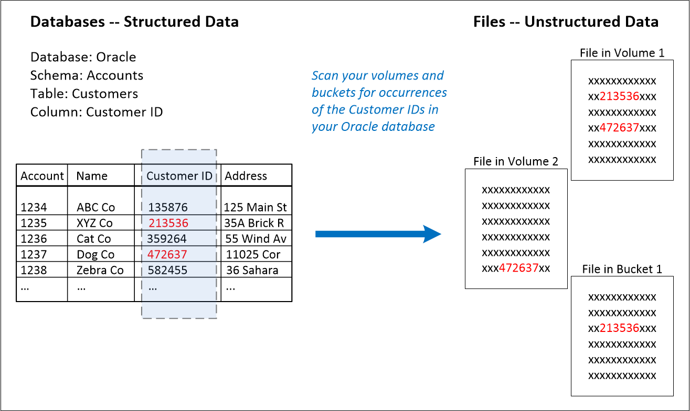
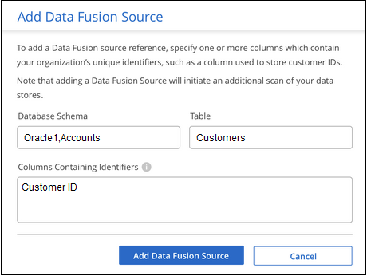
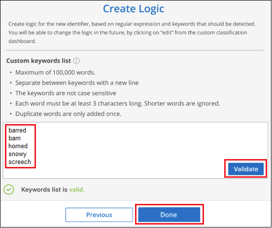
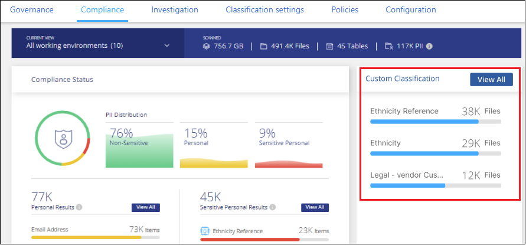
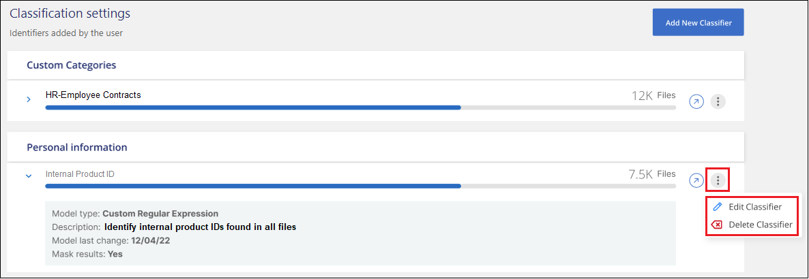

Versionshinweise
Versionshinweise
Ergänzen Sie Ihre BlueXP Klassifizierungs-Scans um persönliche Daten-IDs
 Änderungen vorschlagen
Änderungen vorschlagen
Die BlueXP Klassifizierung bietet Ihnen viele Möglichkeiten, eine benutzerdefinierte Liste mit „personenbezogenen Daten“ hinzuzufügen, die durch die BlueXP Klassifizierung bei zukünftigen Scans identifiziert werden. So haben Sie alle Informationen darüber, wo sich möglicherweise sensible Daten in den Dateien Ihrer Unternehmen befinden.
-
Sie können eindeutige Kennungen basierend auf bestimmten Spalten in Datenbanken hinzufügen, die Sie scannen.
-
Sie können benutzerdefinierte Schlüsselwörter aus einer Textdatei hinzufügen - diese Wörter werden in Ihren Daten identifiziert.
-
Sie können ein persönliches Muster mit einem regulären Ausdruck (regex) hinzufügen — der Regex wird den bestehenden vordefinierten Mustern hinzugefügt.
-
Sie können benutzerdefinierte Kategorien hinzufügen, um zu ermitteln, wo bestimmte Informationskategorien in Ihren Daten gefunden werden.
Alle diese Mechanismen zum Hinzufügen benutzerdefinierter Scankriterien werden in allen Sprachen unterstützt.

|
Die in diesem Abschnitt beschriebenen Funktionen sind nur verfügbar, wenn Sie eine vollständige Klassifizierungsprüfung Ihrer Datenquellen durchgeführt haben. Datenquellen, bei denen nur ein Mapping-Scan vorliegt, zeigen keine Details auf Dateiebene an. |
Fügen Sie benutzerdefinierte ID-Daten aus Ihren Datenbanken hinzu
Eine Funktion, die wir Data Fusion nennen, ermöglicht Ihnen, die Daten Ihres Unternehmens zu überprüfen, um zu ermitteln, ob eindeutige IDs aus Ihren Datenbanken in einer Ihrer anderen Datenquellen gefunden werden. Sie können die zusätzlichen Identifikatoren auswählen, nach denen die BlueXP Klassifizierung in ihren Scans suchen soll, indem Sie eine bestimmte Spalte oder Spalte in einer Datenbanktabelle auswählen. Das folgende Diagramm zeigt beispielsweise, wie Daten-Fusion zur Überprüfung von Volumes, Buckets und Datenbanken eingesetzt wird, um vor allen Kunden-IDs aus der Oracle Datenbank zu kommen.

Wie Sie sehen, wurden in zwei Volumes und in einem S3-Bucket zwei eindeutige Kunden-IDs gefunden. Alle Übereinstimmungen in Datenbanktabellen werden ebenfalls identifiziert.
Da Sie Ihre eigenen Datenbanken scannen, können Sie mit jeder Sprache, in der Ihre Daten gespeichert sind, Daten bei zukünftigen BlueXP Klassifizierungs-Scans erkennen.
Dieser muss unbedingt vorhanden sein "Hat mindestens einen Datenbankserver hinzugefügt" Bis zur BlueXP Klassifizierung vor dem Hinzufügen von Fusion-Datenquellen
-
Klicken Sie auf der Konfigurationsseite in der Datenbank, in der sich die Quelldaten befinden, auf Daten-Fusion verwalten.

-
Klicken Sie auf der nächsten Seite auf Data Fusion Source hinzufügen.
-
Klicken Sie auf der Seite „ Fusion-Quelle hinzufügen “ auf die Seite „
-
Wählen Sie das Datenbankschema aus dem Dropdown-Menü aus.
-
Geben Sie den Tabellennamen in dieses Schema ein.
-
Geben Sie die Spalte oder Spalten ein, die die eindeutigen Kennungen enthalten, die Sie verwenden möchten.
Wenn Sie mehrere Spalten hinzufügen, geben Sie jeden Spaltennamen oder Namen der Tabellenansicht in einer separaten Zeile ein.

-
-
Klicken Sie Auf Data Fusion-Quelle Hinzufügen.

Nach dem nächsten Scan werden diese neuen Informationen im Compliance Dashboard im Abschnitt „Persönliche Ergebnisse“ und auf der Untersuchungsseite im Filter „Persönliche Daten“ angezeigt. Der Name, den Sie für den Klassifikator verwendet haben, wird z. B. in der Filterliste angezeigt Customers.CustomerID.

Löschen Sie eine Data Fusion-Quelle
Wenn Sie sich irgendwann entscheiden, Ihre Dateien nicht mit einer bestimmten Data Fusion Quelle zu scannen, können Sie die Quellzeile auf der Seite Data Fusion Inventory auswählen und auf Daten löschen Fusion Source klicken.

Fügen Sie benutzerdefinierte Schlüsselwörter aus einer Wortliste hinzu
Sie können der BlueXP Klassifizierung benutzerdefinierte Schlüsselwörter hinzufügen, um den Speicherort der Daten bestimmen zu können. Fügen Sie die Schlüsselwörter einfach ein, indem Sie jedes Wort eingeben, das die BlueXP Klassifizierung wiedererkennen soll. Die Schlüsselwörter werden zu den vorhandenen vordefinierten Schlüsselwörtern hinzugefügt, die bereits von der BlueXP-Klassifizierung verwendet werden, und die Ergebnisse werden im Abschnitt „Persönliche Muster“ angezeigt.
Sie können z. B. sehen, wo interne Produktnamen in allen Dateien erwähnt werden, um sicherzustellen, dass diese Namen nicht an Orten zugänglich sind, die nicht sicher sind.
Nach der Aktualisierung der benutzerdefinierten Schlüsselwörter wird die BlueXP Klassifizierung neu gestartet und alle Datenquellen werden gescannt. Nach Abschluss des Scans werden die neuen Ergebnisse im BlueXP Classification Compliance Dashboard im Abschnitt „Persönliche Ergebnisse“ und auf der Untersuchungsseite im Filter „Persönliche Daten“ angezeigt.
-
Klicken Sie auf der Registerkarte Classification settings auf Add New Classifier, um den Assistenten Add Custom Classifier zu starten.

-
Geben Sie auf der Seite Typ auswählen den Namen des Klassifikators ein, geben Sie eine kurze Beschreibung ein, wählen Sie Persönliche Kennung aus und klicken Sie dann auf Weiter.
Der eingegebene Name wird in der BlueXP-Klassifizierungs-UI als Überschrift für gescannte Dateien angezeigt, die den Anforderungen des Klassifikators entsprechen, und als Name des Filters auf der Seite Untersuchung.
Sie können das Kontrollkästchen auch aktivieren, um „erkannte Ergebnisse im System maskieren“ zu aktivieren, damit das vollständige Ergebnis nicht in der Benutzeroberfläche angezeigt wird. So können Sie beispielsweise vollständige Kreditkartennummern oder ähnliche persönliche Daten ausblenden (die Maske erscheint in der Benutzeroberfläche wie folgt: "Pass:[*] Pass:[] Pass:[] Pass:[*]" 3434).

-
Wählen Sie auf der Select Data Analysis Tool -Seite Custom Keywords als Methode aus, mit der Sie den Klassifikator definieren möchten, und klicken Sie dann auf Next.

-
Geben Sie auf der Seite Create Logic die Schlüsselwörter ein, die Sie erkennen möchten - jedes Wort in einer separaten Zeile - und klicken Sie auf Validate.
Die Abbildung unten zeigt interne Produktnamen (verschiedene Arten von Eulen). Bei der BlueXP Klassifizierungssuche für diese Elemente wird die Groß-/Kleinschreibung nicht berücksichtigt.

-
Klicken Sie auf done und die BlueXP Klassifizierung beginnt mit der erneuten Überprüfung Ihrer Daten.
Nach Abschluss des Scans werden diese neuen Informationen im Compliance Dashboard im Abschnitt „Persönliche Ergebnisse“ und auf der Seite „Untersuchung“ im Filter „Persönliche Daten“ angezeigt.

Wie Sie sehen, wird der Name des Klassifikators als Name im Fenster „Persönliche Ergebnisse“ verwendet. Auf diese Weise können Sie viele verschiedene Gruppen von Schlüsselwörtern aktivieren und die Ergebnisse für jede Gruppe anzeigen.
Fügen Sie mithilfe eines Regex benutzerdefinierte Kennungen für persönliche Daten hinzu
Mit einem benutzerdefinierten regulären Ausdruck (regex) können Sie ein persönliches Muster hinzufügen, um bestimmte Informationen in Ihren Daten zu identifizieren. Auf diese Weise können Sie ein neues benutzerdefiniertes Regex erstellen, um neue persönliche Informationselemente zu identifizieren, die noch nicht im System vorhanden sind. Der regex wird zu den vorhandenen vordefinierten Mustern hinzugefügt, die die BlueXP-Klassifizierung bereits verwendet, und die Ergebnisse werden im Abschnitt „Persönliche Muster“ angezeigt.
Sie können beispielsweise sehen, wo Ihre internen Produkt-IDs in allen Dateien erwähnt werden. Wenn die Produkt-ID z. B. eine klare Struktur hat, ist es eine 12-stellige Nummer, die mit 201 beginnt, können Sie die benutzerdefinierte regex-Funktion verwenden, um sie in Ihren Dateien zu suchen. Der reguläre Ausdruck für dieses Beispiel lautet \b201\d{9}\b.
Nach Hinzufügen des regex wird die BlueXP Klassifizierung neu gestartet und scannt alle Datenquellen. Nach Abschluss des Scans werden die neuen Ergebnisse im BlueXP Classification Compliance Dashboard im Abschnitt „Persönliche Ergebnisse“ und auf der Untersuchungsseite im Filter „Persönliche Daten“ angezeigt.
Siehe https://regex101.com/ Wenn Sie Hilfe beim Aufbau des regulären Ausdrucks benötigen, benötigen Sie. Wählen Sie Python für den Geschmack, um zu sehen, welche Arten von Ergebnissen die BlueXP-Klassifikation vom regulären Ausdruck entspricht.
|
|
Derzeit erlauben wir die Verwendung von Pattern Flags beim Erstellen eines Regex nicht - das bedeutet, dass Sie "/" nicht verwenden sollten. |
-
Klicken Sie auf der Registerkarte Classification settings auf Add New Classifier, um den Assistenten Add Custom Classifier zu starten.
-
Geben Sie auf der Seite Typ auswählen den Namen des Klassifikators ein, geben Sie eine kurze Beschreibung ein, wählen Sie Persönliche Kennung aus und klicken Sie dann auf Weiter.
Der eingegebene Name wird in der BlueXP-Klassifizierungs-UI als Überschrift für gescannte Dateien angezeigt, die den Anforderungen des Klassifikators entsprechen, und als Name des Filters auf der Seite Untersuchung. Sie können das Kontrollkästchen auch aktivieren, um „erkannte Ergebnisse im System maskieren“ zu aktivieren, damit das vollständige Ergebnis nicht in der Benutzeroberfläche angezeigt wird. Sie können dies beispielsweise tun, um vollständige Kreditkartennummern oder ähnliche persönliche Daten zu verbergen.

-
Wählen Sie auf der Seite Datenanalyse-Tool_ Benutzerdefinierter regulärer Ausdruck als Methode, mit der Sie den Klassifikator definieren möchten, und klicken Sie dann auf Weiter.

-
Geben Sie auf der Seite Create Logic den regulären Ausdruck und beliebige Annäherungswörter ein, und klicken Sie auf Fertig.
-
Sie können jeden beliebigen regulären Ausdruck eingeben. Klicken Sie auf die Schaltfläche Validieren, um die BlueXP-Klassifizierung zu überprüfen, ob der reguläre Ausdruck gültig ist und nicht zu breit ist — das bedeutet, dass zu viele Ergebnisse zurückgegeben werden.
-
Optional können Sie einige Annäherungsworte eingeben, um die Genauigkeit der Ergebnisse zu verbessern. Das sind Wörter, die in der Regel innerhalb von 300 Zeichen des Musters gefunden werden, nach dem Sie suchen (entweder vor oder nach dem gefundenen Muster). Geben Sie jedes Wort oder jede Phrase in eine separate Zeile ein.

-
Der Klassifikator wird hinzugefügt, und die BlueXP Klassifizierung beginnt, alle Datenquellen erneut zu scannen. Sie gelangen zurück zur Seite Benutzerdefinierte Klassifizierungsmerkmale, auf der Sie die Anzahl der Dateien anzeigen können, die Ihrem neuen Klassifikator entsprechen. Die Ergebnisse aus dem Scannen aller Ihrer Datenquellen werden je nach Anzahl der zu scannenden Dateien einige Zeit in Anspruch nehmen.

Benutzerdefinierte Kategorien hinzufügen
Die BlueXP Klassifizierung unterteilt die gescannten Daten in unterschiedliche Kategorien. Kategorien sind Themenbereiche, die auf der künstlichen Intelligenz Analyse der Inhalte und Metadaten der einzelnen Dateien basieren. "Sehen Sie sich die Liste der vordefinierten Kategorien an".
Kategorien können Ihnen dabei helfen zu verstehen, was mit Ihren Daten passiert, indem Sie die Arten von Informationen anzeigen, die Sie haben. Beispielsweise kann eine Kategorie wie Lebensläufe oder Mitarbeiterverträge sensible Daten enthalten. Wenn Sie die Ergebnisse untersuchen, können Sie feststellen, dass Mitarbeiterverträge an einem unsicheren Ort gespeichert sind. Sie können das Problem dann beheben.
Sie können der BlueXP Klassifizierung benutzerdefinierte Kategorien hinzufügen, damit Sie erkennen können, in welchen Kategorien von Informationen Sie Ihre Daten finden, die speziell für Ihren Datenbestand sind. Jede Kategorie fügen Sie hinzu, indem Sie „Trainingsdateien“ erstellen, die die Datenkategorien enthalten, die Sie identifizieren möchten. Anschließend lässt die BlueXP Klassifizierung diese Dateien scannen, um sie über KI zu „lernen“, damit die Daten in Ihren Datenquellen identifiziert werden können. Die Kategorien werden zu den vorhandenen vordefinierten Kategorien hinzugefügt, die durch die BlueXP Klassifizierung bereits identifiziert werden. Die Ergebnisse sind im Abschnitt „Kategorien“ sichtbar.
Sie können beispielsweise sehen, wo sich komprimierte Installationsdateien im .gz-Format in Ihren Dateien befinden, damit Sie sie bei Bedarf entfernen können.
Nach der Aktualisierung der benutzerdefinierten Kategorien wird die BlueXP Klassifizierung alle Datenquellen neu gescannt. Nach Abschluss des Scans werden die neuen Ergebnisse im BlueXP Klassifizierungs-Compliance-Dashboard im Abschnitt „Kategorien“ und auf der Untersuchungsseite im Filter „Kategorie“ angezeigt. "Lesen Sie, wie Sie Dateien nach Kategorien anzeigen".
Sie müssen mindestens 25 Trainingsdateien erstellen, die Beispiele für die Datenkategorien enthalten, die von der BlueXP Klassifizierung erkannt werden sollen. Die folgenden Dateitypen werden unterstützt:
.CSV, .DOC, .DOCX, .GZ, .JSON, .PDF, .PPTX, .RTF, .TXT, .XLS, .XLSX, Docs, Sheets, and Slides
Die Dateien müssen mindestens 100 Byte groß sein und sich in einem Ordner befinden, auf den BlueXP Zugriff bietet.
-
Klicken Sie auf der Registerkarte Classification settings auf Add New Classifier, um den Assistenten Add Custom Classifier zu starten.
-
Geben Sie auf der Seite Select type den Namen des Klassifikators ein, geben Sie eine kurze Beschreibung ein, wählen Sie Category aus und klicken Sie dann auf Next.
Der eingegebene Name wird in der BlueXP Klassifizierungs-UI als Überschrift für gescannte Dateien angezeigt, die der von Ihnen definierten Datenkategorie entsprechen, und als Name des Filters auf der Seite Untersuchung.

-
Stellen Sie auf der Seite Create Logic sicher, dass Sie die Lerndateien vorbereitet haben, und klicken Sie dann auf Select files.

-
Geben Sie die IP-Adresse des Volumes und den Pfad ein, in dem sich die Trainingsdateien befinden, und klicken Sie auf Hinzufügen.

-
Überprüfen Sie, ob die Trainingsdateien von der BlueXP Klassifizierung erkannt wurden. Klicken Sie auf x, um alle Trainingsdateien zu entfernen, die nicht den Anforderungen entsprechen. Klicken Sie dann auf Fertig.

Die neue Kategorie wird gemäß den Trainingsdateien erstellt und der BlueXP Klassifizierung hinzugefügt. Die BlueXP Klassifizierung beginnt dann, alle Datenquellen neu zu scannen, um Dateien zu identifizieren, die in diese neue Kategorie passen. Sie kehren zur Seite Benutzerdefinierte Klassifikatoren zurück, auf der Sie die Anzahl der Dateien anzeigen können, die Ihrer neuen Kategorie entsprechen. Die Ergebnisse aus dem Scannen aller Ihrer Datenquellen werden je nach Anzahl der zu scannenden Dateien einige Zeit in Anspruch nehmen.
Ergebnisse von Ihren benutzerdefinierten Klassifikatoren anzeigen
Sie können die Ergebnisse von einem Ihrer benutzerdefinierten Klassifikatoren im Compliance Dashboard und auf der Untersuchungsseite anzeigen. In diesem Screenshot werden beispielsweise die übereinstimmenden Informationen im Compliance-Dashboard im Abschnitt „Persönliche Ergebnisse“ angezeigt.

Klicken Sie auf das  Um die detaillierten Ergebnisse auf der Untersuchungsseite anzuzeigen.
Um die detaillierten Ergebnisse auf der Untersuchungsseite anzuzeigen.
Darüber hinaus werden alle benutzerdefinierten Klassifikatorergebnisse auf der Registerkarte Benutzerdefinierte Klassifikatoren angezeigt, und die oberen 6 benutzerdefinierten Klassifikatorergebnisse werden wie unten gezeigt im Compliance Dashboard angezeigt.

Benutzerdefinierte Klassifikatoren verwalten
Sie können alle benutzerdefinierten Klassifikatoren ändern, die Sie mit der Schaltfläche Klassifikator bearbeiten erstellt haben.

|
Sie können derzeit keine Data Fusion-Klassifikatoren bearbeiten. |
Und wenn Sie zu einem späteren Zeitpunkt entscheiden, dass Sie keine BlueXP-Klassifizierung benötigen, um die von Ihnen hinzugefügten benutzerdefinierten Muster zu identifizieren, können Sie die Schaltfläche Klassifikator löschen verwenden, um jedes Element zu entfernen.
